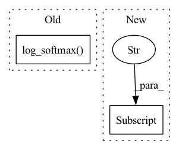

Pattern ID :35491
Before Change
// Sort outputs at time
logp_targets, positions = torch.topk(
out.log_softmax(dim=-1) .view(-1), k=beam, dim=-1
)
best_logp = (
logp_targets[0]After Change
"out_PN": out_PN,
}
if lm_module:
topk_hyp["hidden_lm"] = hidden_lm
topk_hyp["logp_score"] += (
lm_weight * log_probs_lm[0, 0, positions[j]]
)In pattern: SUPERPATTERN
Frequency: 3
Non-data size: 2
Instances Fragment ID: 101387343
Project Name: speechbrain/speechbrain
Commit Name: 4f184ec4401d29785bf25a773f29facf0a108f82
Time: 2020-11-03
Author: ff936tw@gmail.com
File Name: speechbrain/decoders/transducer.py
M Class Name: AnonimousClass
N Class Name: AnonimousClass
M Method Name: transducer_beam_search_decode(11)
N Method Name: transducer_beam_search_decode(11)
M Parent Class:
N Parent Class:
M File Name: speechbrain/decoders/transducer.py
N File Name: speechbrain/decoders/transducer.py
M Start Line: 476
M End Line: 526
N Start Line: 449
N End Line: 534
Before Change
predictions = {}
if self.is_ctc_active(stage):
ctc_logits = self.modules.ctc_lin(encoded_signal)
predictions["ctc_logprobs"] = self.hparams.log_softmax( ctc_logits)
// TODO check if ctc_lin isn"t triggered twice ... if so, freeze & unfreeze it"s parameters?
(
predictions["tokens"],
_,After Change
pred["tokens"], _, pred["logp"] = self.hparams.train_valid_test_search(
encoded_signal, self.feat_lens
)
pred["logp"] , _ = batch_pad_right(pred["logp"])
return pred
Fragment ID: 101387342
Project Name: speechbrain/speechbrain
Commit Name: b5f38186fb74dcaa91340e57b75e132073777e13
Time: 2023-01-12
Author: 2925439+anautsch@users.noreply.github.com
File Name: tests/templates/fetching_ddp_dynbatch_finetuning/finetune_LM.py
M Class Name: AnonimousClass
N Class Name: AnonimousClass
M Method Name: lm_compute_forward(3)
N Method Name: lm_compute_forward(3)
M Parent Class:
N Parent Class:
M File Name: tests/templates/fetching_ddp_dynbatch_finetuning/finetune_LM.py
N File Name: tests/templates/fetching_ddp_dynbatch_finetuning/finetune_LM.py
M Start Line: 49
M End Line: 69
N Start Line: 62
N End Line: 68
Before Change
y_in = prepend_bos_token(bpe, bos_index=params.bos_index)
logits = params.model(y_in, init_params=init_params)
pout = params.log_softmax( logits)
return pout
def compute_objectives(self, predictions, targets, stage="train"):
pout = predictionsAfter Change
class LM(sb.core.Brain):
def compute_forward(self, batch, stage):
Forward computations from the sentence batches to the output probabilities.
tokens_bos = batch["tokens_bos"] .to(self.device)
logits = self.hparams.model(tokens_bos)
pred = self.hparams.log_softmax(logits)
return pred Fragment ID: 101387344
Project Name: speechbrain/speechbrain
Commit Name: 37cd9e704357d544eb54e43ce4e4e86f96ac89a0
Time: 2021-01-10
Author: jzhong9@u.rochester.edu
File Name: recipes/LibriSpeech/LM/experiment.py
M Class Name: LM
N Class Name: LM
M Method Name: compute_forward(3)
N Method Name: compute_forward(4)
M Parent Class: sb.core.Brain
N Parent Class: sb.core.Brain
M File Name: recipes/LibriSpeech/LM/experiment.py
N File Name: recipes/LibriSpeech/LM/experiment.py
M Start Line: 47
M End Line: 58
N Start Line: 20
N End Line: 23